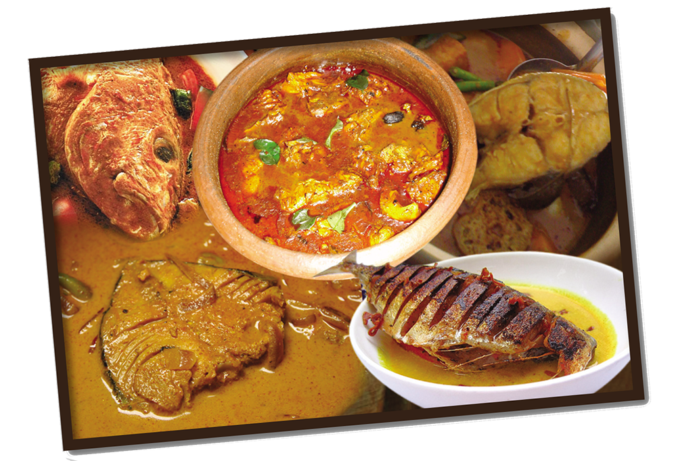

- ක්ෂුද්ර ජිවින් වර්ධනය විම වලක්වා / පාලනය කොට ආහාර සංරක්ෂණය කිරිම
- ආහාරවල අඩංගු විය හැකි ස්වාභාවික එන්සයිම අක්රිය කිරිම( ඇතැම් එන්සයිම ආහාර අප්රිය ජනක තත්ත්වයට පත්කරනු ලබයි )
- ආහාරයේ සුරක්ෂිතභාවය තහවුරු කිරිම පිණිස එහි අඩංගුව පැවතිය හැකි විෂ සංඝටක හෝ හානිකර ද්රව්ය පහ කරලීම
- ආහාරයේ පෝෂණ ගුණය වඩිදියුණු කිරිම සහ ආහාර ජිර්ණයට උපකාරි වන එන්සයිම ක්රියාකාරිත්වය වැඩිකරලිම මඟින්
ආහාර වල පෝෂණ ගුණ දියුණු කිරිම
උදා :- පිසු බත් හෝ මස් වර්ග, බීජෞෂණයට ලක් කල ඇට වර්ග
- ආහාරයේ රසවත් බව හා ආකර්ෂණිය බව වැඩි දියුණු කරලිම
- පාරිභෝගික රුචිකත්වය මත සිත් සේ ආහාර වර්ග තෝරා ගැනීමේ පරාසය පුළුල් කිරිම හා ආහාර විවිධාංගීකරණය
- ආහාරවල අඩංගු ඇතැම් හිතකර ගුණාංග ශරිරයට ලබා ගැනීම පහසු කරලීම
උදා :- තක්කාලිවල අඩංගු ලයිකෝෆින් නම් වර්ණකය අමු තක්කාලි (තක්කාලි සලාදය )වඩා පිසින ලද තක්කාලි
( උදා :- තක්කාලි සෝස්, තක්කාලි ව්යංජන, තක්කාලි පේස්ට් ) වලින් පහසුවෙන් ශරිරයට උරාගත හැකි බැව් පැවසේ )

අධික තාපය, ප්රෝටින් ,මේද සහ කාබෝහයිඩ්රේට යන මහා පෝෂක වල විවිධාකාර වෙනස්කම් ඇති කරයි. ඒ අනුව තාපය
පෝෂණ ගුණ හින කිරිමට මෙන්ම විෂ ද්රව්ය උත්පාදනයටද හේතු විය හැකිය.
යම් ආහාරයක නියම පෝෂණය ලැබෙනුයේ එම ආහාරය ජිරණය වි පහසුවෙන් ශරිරයට උරා ගැනීමේ හැකියාවක් පවතිනම් පමණි.
එම නිසා ආහාර ජිර්ණය කෙරෙහි බලපාන සාධක පිළිබඳව විශේෂයෙන් සොයා බැලිය යුතුය. සෑම ආහාරයකම පෝෂණ ගුණ රුකගැනීමට
අදාලව පොදු පිළිගැනිම් හෝ නිතිරිති සොයා ගැනිමට අපහසු වුවද පිසිම නිසා ආහාර ජිරණය පහසුවිම පිළිබඳව මෙන්ම ජිර්ණයට බාධා
ගෙනදෙන අවස්ථා පිළිබඳව උදාහරණ එමට ඇත.